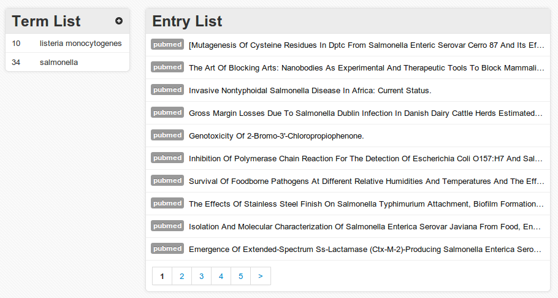

杭州疾控系统实验室
信息交流平台的研究
杭州市疾病预防控制中心微检科
俞骅 2013-11-27
平台特点
松耦合，可扩展
跨平台，可支持移动终端
支持第三方社交应用
开源程序
多语言支持
WHAT WE DO
A Web Based Comunication & Applications System for CDC Labs
项目开发时间表
2009.12 - 2010.06: 查询资料，初步选择平台开发方案和工具，测试并选择
程序应用依赖库，初步建立框架核心，在Github.com网站建立源代码库
2009.12 - 2010.06: 查询资料，初步选择平台开发方案和工具，测试并选择
程序应用依赖库，初步建立框架核心，在Github.com网站建立源代码库
2010.06 - 2011.06: 开发平台核心层程序构架，建立可扩展的用户模型，可
填充各种内容媒体和应用程序的页面树形结构和相应的权限机制，形成平台核心构架
2011.06 - 2011.09: 开发收藏，短信等功能的通用组件，设计并建立平台
信息交流基础应用程序，开发知识库应用程序。开发男性同性恋HIV病毒监测预约登记程序
2011.09 - 2012.06: 建立区县微生物检验实验室盲样考核应用程序，上送
菌株鉴定反馈应用程序。初步建立区域化的病原菌MLST数据库平台，建立基于互
联网的Entrez数据自动跟踪应用程序
2012.06 - 2012.09: 添加基于Oauth2和OpenID技术的用户登录功能，用户层接口
与galaxy project的用户层进行对接。在dotcloud，heroku和appfog云平台部署测试
2012.09 - 2013.09: 在虚拟服务器VPS部署与测试，对VPS部署的应用程序
进行性能优化，撰写相关论文与总结报告
FRONTEND
-
CSS3
-
Github
-
Bitbucket
-
Bootstrap
-
HTML5
-
 JQuery
JQuery
-
RSS Feed
-
DISQUS
-
 Less
Less
-
Responsive
用户扩展
project/settings.py
GAUTH_USER_EXTENSIONS = (
# 添加第三方应用的用户插件
'gauth.extensions.avatar',
'gauth.extensions.portfolio',
'ask.extensions.question',
)
运行south更新数据表
$ python manage.py schemamigration gauth --auto
$ python manage.py migrate gauth
页面扩展
gbase/models.py
from cms.module.page.models import Page
Page.register_extensions(
# 添加页面插件
'cms.module.extensions.datepublisher',
'cms.module.extensions.changedate',
'cms.module.page.extensions.navigation',
...
)
定义权限机制
from permission import registry
from permission import PermissionHandler
from app.models import YourModel
class YourModelPermissionHandler(PermissionHandler):
"""权限处理器 """
def has_perm(self, user_obj, perm, obj=None):
if user_obj.is_authenticated():
if perm == 'app.add_model':
return True
elif obj and obj.author == user_obj:
return True
return False
registry.register(YourModel, YourModelPermissionHandler)
其他通用组件
1. rate 组件
2. comment 组件
3. message 组件
4. chart 组件
...
内容发布
文章管理系统，具有类似页面程序的可扩展性特性，避免了页面过多构建树形目录时对数据库的大量消耗的，主要用来发布新闻或事件，在实验室管理中传达信息。
知识库
功能类似维基百科的内容类应用程序。通过维基类应用程序，将疾控工作中总结的知识点整理成资料库的形式，方便查阅。
问答
用户可以发帖提问，在答案中用户可以根据有用程度进行排序，从而获得最佳答案。通过此应用程序，可以为区县各个疾控实验室明确所需开展的工作，解答工作中遇到的问题，反馈各个实验室提出的意见和建议；
Entrez Follow
在信息平台构建检索条件，由服务器自动定期在NCBI数据库内进行检索，并在信息平台上反馈检索结果给用户。同时提供收藏和与他人分享记录的功能，方便研究团队共享数据；

MLST区域数据库
建立杭州地区的病原菌分子分型指纹库，方便各个实验室查询和溯源。
平台部署
基于PaaS的云平台：Heroku, dotcloud, appfog
基于Linux系统的虚拟服务器Virtual Private Server
Heroku部署
1. 建立虚拟python环境，安装heroku的django支持工具
$ pip install django-toolbelt
2. 修改Procfile配置文件
web: gunicorn myproject.wsgi
3. 本地运行测试
$ foreman start
Heroku部署
4. 设置项目settings.py
import os
import dj_database_url
DATABASES['default'] = dj_database_url.config()
SECURE_PROXY_SSL_HEADER = (
'HTTP_X_FORWARDED_PROTO',
'https',
)
ALLOWED_HOSTS = ['*']
BASE_DIR = os.path.dirname(os.path.abspath(__file__))
STATIC_ROOT = 'staticfiles'
STATIC_URL = '/static/'
STATICFILES_DIRS = (
os.path.join(BASE_DIR, 'static'),
)
Heroku部署
5. deploy至heroku平台
$ heroku create
$ git push heroku master
6. 同步数据库
$ heroku run python manage.py syncdb
$ heroku run python manage.py migrate
Dotcloud部署
1. 编辑配置文件dotcloud.yml
www:
type: python
db:
type: postgresql
2. 创建dotcloud应用
$ dotcloud create myproject
$ dotcloud push
$ dotcloud run db -- psql #配置数据库
3. 设置安装后自动配置脚本postinstall
#!/bin/sh
python createdb.py
python manage.py syncdb --noinput
python manage.py migrate
Dotcloud部署
4. 配置settings.py文件
import json
with open('/home/dotcloud/environment.json') as f:
env = json.load(f)
DATABASES = {
'default': {
'ENGINE': 'django.db.backends.postgresql_psycopg2',
'NAME': 'happydb',
'USER': env['DOTCLOUD_DB_SQL_LOGIN'],
'PASSWORD': env['DOTCLOUD_DB_SQL_PASSWORD'],
'HOST': env['DOTCLOUD_DB_SQL_HOST'],
'PORT': int(env['DOTCLOUD_DB_SQL_PORT']),
}
}
AppFog部署
1. 进入Appfog管理台设置，获取数据库等参数，设置环境变量
2. 根据配置修改settings.py，上传同步代码
$ af update
VPS部署
1. 安装Linux发行版，比如Ubuntu
2. 配置openssl，防火墙等
3. apt-get install 安装编译依赖库，其他必须软件
4. 安装web服务器nginx，数据库PostgreSQL
5. 安装gunicorn, memecache, redis, celery等
6. 创建虚拟python运行环境，克隆代码库，运行项目
VPS硬件配置
单核CPU
512M内存
20G Raid10 硬盘
10M专线，1000G流量
VPS性能优化与测试
# ab -n 1000 -c 10 http://127.0.0.1:8000/
建立实例

网站地图
下一步展望
1. 完善当前的的应用，修改BUG，建立文档方便他人建立平台实例
2. 丰富知识库内容，进一步融入到实际工作中，宣传并推广网站
3. 建立PFGE等数据为基础的区域化分子分型数据库
4. 同步化galaxy数据，提供在线的科研分析工具，特别是今后工作中很可能大量使用的测序技术。
致谢
感谢杭州市科技局将本课题列入杭州市科技发展计划（引导计划）项目。
感谢杭州市科技局农村与社会发展处领导、杭州市卫生局科教处领导、杭州市疾病预防控制中心领导和中心科教科对本课题的大力支持。
感谢本课题组成员为完成本课题所做的贡献。
感谢杭州市疾病预防控制中心微生物检验科各位同事的大力支持和配合。感谢杭州市疾病预防控制中心性病与艾滋病防治所给予的支持
俞 骅
2013-11-27
 Python
Python
 Node.js
Node.js
 MySQL
MySQL
 PostgreSQL
PostgreSQL
 Redis
Redis
 Celery
Celery
 Memcached
Memcached